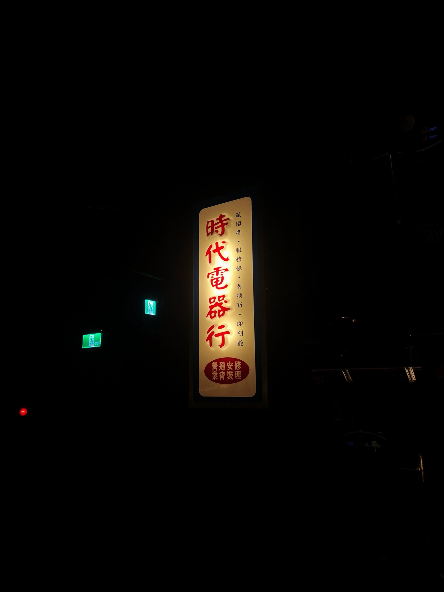
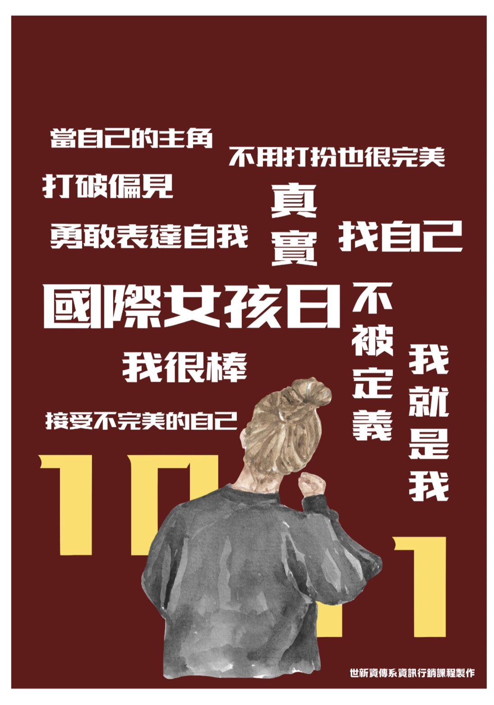
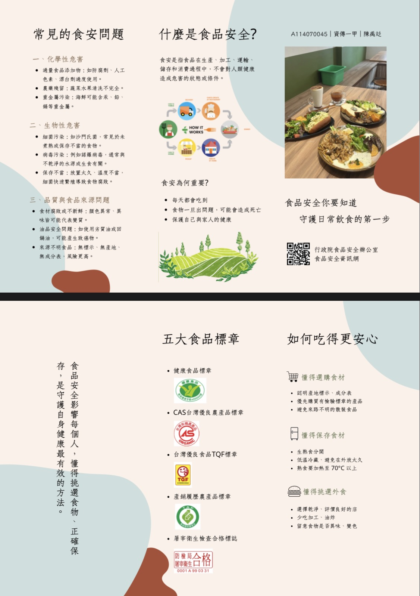

陳禹彣 Irene
臺北市文山區木柵路一段17巷1號．(02) 2236 8225．
A114070045@mail.shu.edu.tw
我是一個心思細膩且適應力強的女大一學生，在團體中，我習慣細心觀察需求且給予支持，待人真誠且重視情感。面對挑戰時，我也能以積極負責的態度完成任務，是個值得信賴的夥伴
我是一個心思細膩且適應力強的女大一學生，在團體中，我習慣細心觀察需求且給予支持，待人真誠且重視情感。面對挑戰時，我也能以積極負責的態度完成任務，是個值得信賴的夥伴
與舞社幹部及其他學校共同合辦五校聯合迎新及六校聯合舞展，甚至參加台南市高中職聯合舞團與玖壹壹共同演出全中運開幕舞台。
利用現實例子去舉證，像是疏離現實中的關係或者是自卑感上升，並透過與組員互相質問練習成功獲勝。
深入閱讀真實事件改編作品熔爐，以細膩筆觸反思人性黑暗與正義價值，憑藉具溫度的獨立思考獲頒特優榮譽。
我是一個熱愛生活、享受舞台的人。在我的生活中，「跳舞」與「唱歌」是不求或缺的核心元素。 對我來說，跳舞不只是身體的律動，更是一種釋放壓力與表達情感的方式。在練習舞步的過程中，我學會了如何專注於細節，並在不斷的挑戰中突破體能與肢體限制。而唱歌則是我的心靈窗口，透過旋律與歌詞的詮釋，我能與聽眾建立共鳴，並在音符間找到自信與平靜。
這兩項興趣培養了我良好的表演欲與溝通能力，讓我習慣在人群面前展現最好的一面。無論是在團隊協作還是個人表現上，我都習慣帶著這份熱情與節奏感投入其中。我期待能將這份開朗與活力帶進環境中，與大家共同創造精彩的火花。

這張是在台北流行音樂中心的一個展覽裡拍的，叫做聽我們的歌，裡面用了很多復古的場景，讓我們回想以前的老歌，當時覺得這個招牌很有意境，散發著黃光就拍了。

這是一張宣傳國際女孩日的海報，利用簡單明瞭的標語，讓大家更認識且熟悉國際女孩日的概念。

透過淺顯易懂的列點以及標語標章，來讓大家更了解食品安全的重要性。